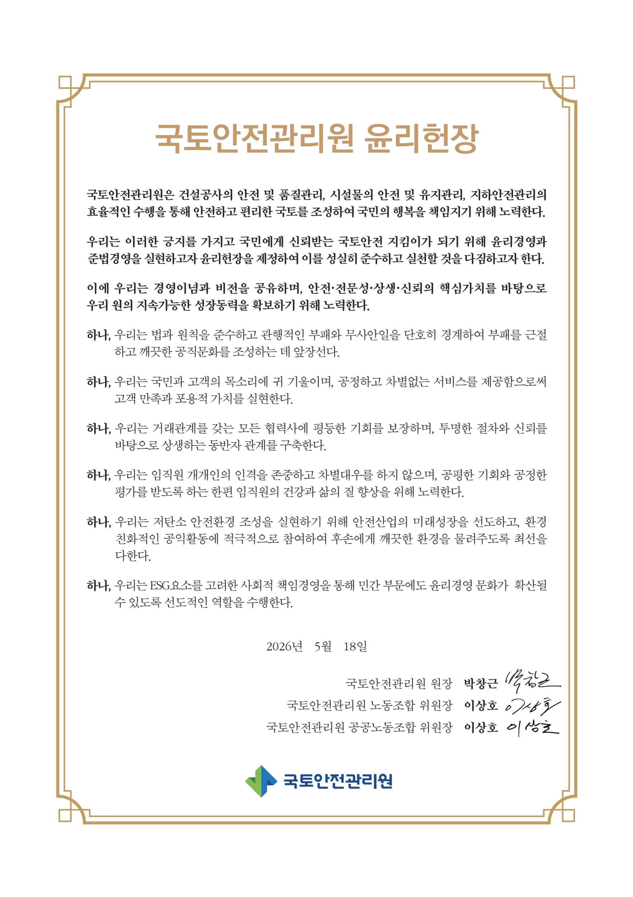
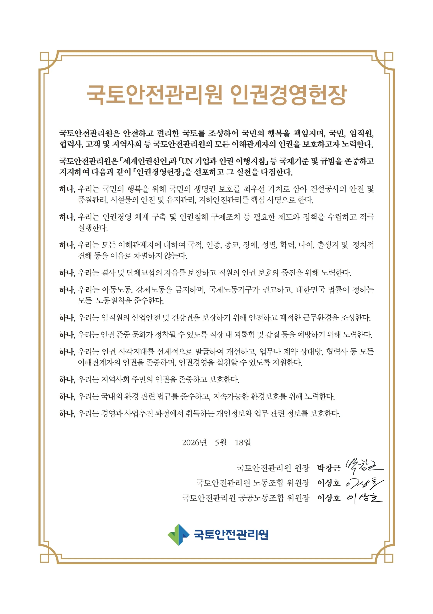
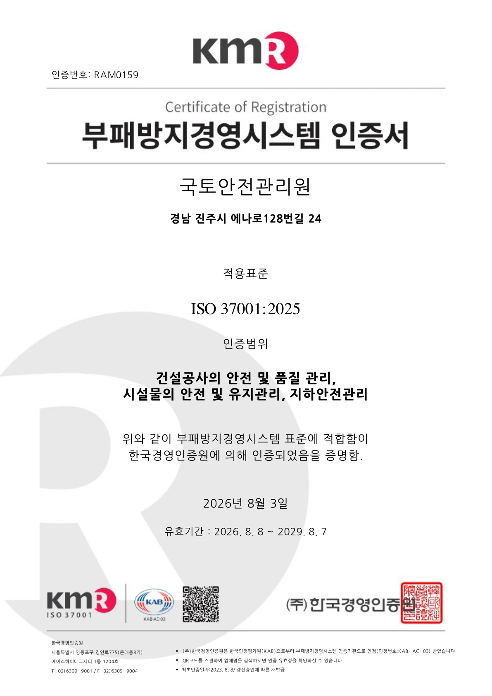
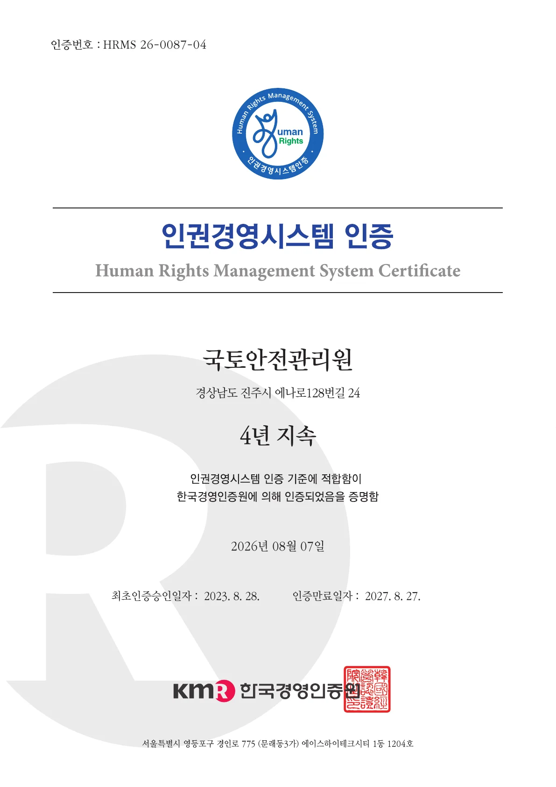

정책연구실 바로가기
청렴 가이드 열람
국토안전 청렴의지 보러가기
청렴 자료
윤리경영헌장
국토안전관리원의 윤리경영 기준

인권경영헌장
인권 존중과 책임 있는 경영 원칙

부패방지경영시스템 인증서
ISO 37001 기반 부패방지경영시스템 인증

인권경영시스템 인증서
인권경영시스템 인증 현황

다운로드
계약사무처리규칙
HWP 다운로드 · 2026.06.30
공익신고 처리 및 신고자 보호 운영지침
HWP 다운로드 · 2023.12.04